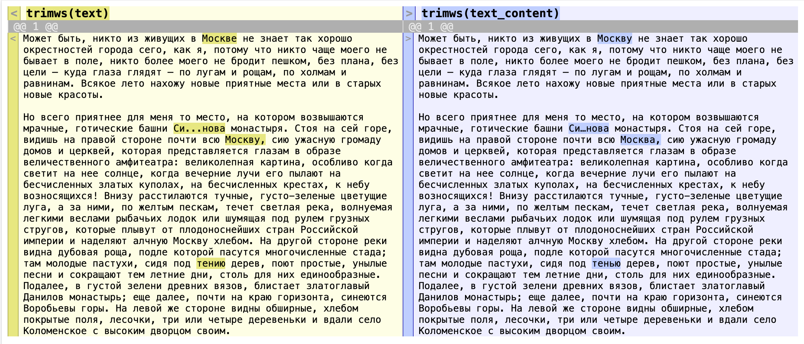

Sys.setenv(OPENROUTER_API_KEY = "ваш_ключ_api")7 Добавление разметки с LLM
7.1 Модели
- Большая часть моделей требует денег за API =(
- Есть бесплатный пробный период у Gemini, но из России воспользоваться им не получится без VPN =/
- Есть полностью бесплатные локальные модели. Они тяжелые и не всегда умные. =
- Копипаста через телеграм-чат - не наш метод.
- Разные хитрости.
OpenRouter — это агрегатор LLM‑моделей (OpenAI, Anthropic, Meta, Mistral и др.) с единым API. Можно выбрать бесплатные модели (с лимитами) и вызывать их из R/RStudio.
7.2 Получение ключа API
API (Application programming interface) это набор правил, по которым приложения или части программы общаются друг с другом.
Идем на сайт https://openrouter.ai/, регистрируемся, получаем ключ (дайте ему осмысленное название), копируем и сразу сохраняем.
Или отредактируйте файл .Renviron в домашней директории:
usethis::edit_r_environ()После чего добавьте строку в файл OPENROUTER_API_KEY=ваш_ключ_api и перезапустите сессию.
Проверить:
Sys.getenv("OPENROUTER_API_KEY")7.3 Начало работы
library(ellmer)packageVersion("ellmer")[1] '0.3.0'chat <- chat_openrouter(
system_prompt = "You always reply in Latin",
api_key = Sys.getenv("OPENROUTER_API_KEY"),
model = NULL
)Using model = "gpt-4o".chat$chat("На сколько частей разделена Галлия?")
# Error in `req_perform_connection()`:
# ! HTTP 402 Payment Required.
# ℹ Insufficient credits. Add more using
# https://openrouter.ai/settings/credits
# Run `rlang::last_trace()` to see where the error occurred.Список бесплатных моделей можно уточнить здесь https://openrouter.ai/models
chat <- chat_openrouter(
system_prompt = "You always reply in Latin",
api_key = Sys.getenv("OPENROUTER_API_KEY"),
model = "openai/gpt-oss-20b:free"
)
chat$chat("На сколько частей разделена Галлия?")
# Gallia in tres partes dividitur: Gallia Narbonensis, Gallia
# Lugdunensis, et Gallia Belgica.Если все получилось, идем дальше.
7.4 Создание промпта
(Тут будет подробнее про стратегии написания промптов)
system_prompt <- "You are an experienced TEI encoder specializing in geographic markup. Your task is to identify and tag all place references in the text using proper TEI <place> elements.
INSTRUCTIONS:
1. Identify ALL geographic references including:
- Cities, towns, villages (e.g., Paris, London)
- Countries, regions, states (e.g., France, Tuscany, California)
- Geographic features (e.g., Rhine River, Alps, Mediterranean Sea)
- Buildings and landmarks (e.g., Eiffel Tower, Westminster Abbey)
- Fictional places (e.g., Hogwarts, Middle-earth)
2. Use this tagging format:
- Simple places: <place>Paris</place>
- With type attribute: <place type='city'>Paris</place>
- With key/ID: <place key='paris_france'>Paris</place>
3. TYPES to use:
- settlement (cities, towns, villages)
- country
- region
- building
- landmark
- waterway
- mountain
- fictional
4. RULES:
- Tag the complete place name as it appears
- Don't tag directional references like 'north', 'eastern' unless part of proper name
- Include adjectives when part of the place name (e.g., 'New York', 'Great Britain')
- For ambiguous cases, prioritize the most specific geographic reading
5. Return the complete text with all place references properly tagged."7.5 Добавление разметки
user_prompt <- "Может быть, никто из живущих в Москве не знает так хорошо окрестностей города сего, как я, потому что никто чаще моего не бывает в поле, никто более моего не бродит пешком, без плана, без цели — куда глаза глядят — по лугам и рощам, по холмам и равнинам. Всякое лето нахожу новые приятные места или в старых новые красоты.
Но всего приятнее для меня то место, на котором возвышаются мрачные, готические башни Си...нова монастыря. Стоя на сей горе, видишь на правой стороне почти всю Москву, сию ужасную громаду домов и церквей, которая представляется глазам в образе величественного амфитеатра: великолепная картина, особливо когда светит на нее солнце, когда вечерние лучи его пылают на бесчисленных златых куполах, на бесчисленных крестах, к небу возносящихся! Внизу расстилаются тучные, густо-зеленые цветущие луга, а за ними, по желтым пескам, течет светлая река, волнуемая легкими веслами рыбачьих лодок или шумящая под рулем грузных стругов, которые плывут от плодоноснейших стран Российской империи и наделяют алчную Москву хлебом. На другой стороне реки видна дубовая роща, подле которой пасутся многочисленные стада; там молодые пастухи, сидя под тению дерев, поют простые, унылые песни и сокращают тем летние дни, столь для них единообразные. Подалее, в густой зелени древних вязов, блистает златоглавый Данилов монастырь; еще далее, почти на краю горизонта, синеются Воробьевы горы. На левой же стороне видны обширные, хлебом покрытые поля, лесочки, три или четыре деревеньки и вдали село Коломенское с высоким дворцом своим."chat <- chat_openrouter(
system_prompt = system_prompt,
api_key = Sys.getenv("OPENROUTER_API_KEY"),
model = "openai/gpt-oss-20b:free"
)
response <- chat$chat(user_prompt)
# Может быть, никто из живущих в <place
# type='settlement'>Москву</place> не знает так хорошо окрестностей
# города сего, как я, потому что никто чаще моего не бывает в поле,
# никто более моего не бродит пешком, без плана, без цели — куда
# глаза глядят — по лугам и рощам, по холмам и равнинам. Всякое лето
# нахожу новые приятные места или в старых новые красоты.
#
# Но всего приятнее для меня то место, на котором возвышаются
# мрачные, готические башни <place type='building'>Си…нова
# монастыря</place>. Стоя на сей горе, видишь на правой стороне почти
# всю <place type='settlement'>Москва</place>, сию ужасную громаду
# домов и церквей, которая представляется глазам в образе
# величественного амфитеатра: великолепная картина, особливо когда
# светит на нее солнце, когда вечерние лучи его пылают на
# бесчисленных златых куполах, на бесчисленных крестах, к небу
# возносящихся! Внизу расстилаются тучные, густо-зеленые цветущие
# луга, а за ними, по желтым пескам, течет светлая река, волнуемая
# легкими веслами рыбачьих лодок или шумящая под рулем грузных
# стругов, которые плывут от плодоноснейших стран <place
# type='region'>Российской империи</place> и наделяют алчную <place
# type='settlement'>Москву</place> хлебом. На другой стороне реки
# видна дубовая роща, подле которой пасутся многочисленные стада; там
# молодые пастухи, сидя под тенью дерев, поют простые, унылые песни и
# сокращают тем летние дни, столь для них единообразные. Подалее, в
# густой зелени древних вязов, блистает златоглавый <place
# type='building'>Данилов монастырь</place>; еще далее, почти на краю
# горизонта, синеются <place type='mountain'>Воробьевы горы</place>.
# На левой же стороне видны обширные, хлебом покрытые поля, лесочки,
# три или четыре деревеньки и вдали село <place
# type='settlement'>Коломенское</place> с высоким дворцом своим.На первый взгляд, модель справилась неплохо. “Российскую империю” стоило тегировать как “страну”, а не “регион” (подобные случаи можно прописать в промпте).
7.6 Добавление пролога
add_tei_prologue <- function(marked_text,
title = "Карамзин Н.М. Бедная Лиза",
author = "Карамзин, Николай Михайлович",
date = "1792") {
prologue <- sprintf('<?xml version="1.0" encoding="UTF-8"?>
<TEI xmlns="http://www.tei-c.org/ns/1.0">
<teiHeader>
<fileDesc>
<titleStmt>
<title>%s</title>
<author>%s</author>
</titleStmt>
<publicationStmt>
<p>Цифровое издание для исследовательских целей</p>
</publicationStmt>
<sourceDesc>
<p>Оригинальный текст %s года</p>
</sourceDesc>
</fileDesc>
</teiHeader>
<text>
<body>
<p>%s</p>
</body>
</text>
</TEI>', title, author, date, marked_text)
return(prologue)
}Применяем к нашему тексту.
tei_document <- add_tei_prologue(response)Сохраняем в файл.
writeLines(tei_document, "bednaya_liza_fragment.xml", useBytes = TRUE)Проверяем валидность XML.
library(xml2)
xml_doc <- read_xml("bednaya_liza_fragment.xml")
class(xml_doc)[1] "xml_document" "xml_node" Прежде чем масштабировать, проверим, нет ли галлюцинаций в оригинале (такое, увы, бывает).
7.7 Сравнение с исходником
Извлекаем текст из параграфа.
ns <- c(tei = "http://www.tei-c.org/ns/1.0")
text_content <- xml_doc |>
xml_find_all(".//tei:body//tei:p", ns) |>
xml_text() |>
paste(collapse = "nn")Выводим результат.
cat(text_content)Может быть, никто из живущих в Москву не знает так хорошо окрестностей города сего, как я, потому что никто чаще моего не бывает в поле, никто более моего не бродит пешком, без плана, без цели — куда глаза глядят — по лугам и рощам, по холмам и равнинам. Всякое лето нахожу новые приятные места или в старых новые красоты.
Но всего приятнее для меня то место, на котором возвышаются мрачные, готические башни Си…нова монастыря. Стоя на сей горе, видишь на правой стороне почти всю Москва, сию ужасную громаду домов и церквей, которая представляется глазам в образе величественного амфитеатра: великолепная картина, особливо когда светит на нее солнце, когда вечерние лучи его пылают на бесчисленных златых куполах, на бесчисленных крестах, к небу возносящихся! Внизу расстилаются тучные, густо-зеленые цветущие луга, а за ними, по желтым пескам, течет светлая река, волнуемая легкими веслами рыбачьих лодок или шумящая под рулем грузных стругов, которые плывут от плодоноснейших стран Российской империи и наделяют алчную Москву хлебом. На другой стороне реки видна дубовая роща, подле которой пасутся многочисленные стада; там молодые пастухи, сидя под тенью дерев, поют простые, унылые песни и сокращают тем летние дни, столь для них единообразные. Подалее, в густой зелени древних вязов, блистает златоглавый Данилов монастырь; еще далее, почти на краю горизонта, синеются Воробьевы горы. На левой же стороне видны обширные, хлебом покрытые поля, лесочки, три или четыре деревеньки и вдали село Коломенское с высоким дворцом своим.Теперь можно сравнивать.
library(diffobj)
diffChr(trimws(text), trimws(text_content), mode = "sidebyside")
Упс. Машинка действительно кое-что поправила, и не в лучшую сторону.
7.8 Метрики
https://digitalcommons.unl.edu/r-journal/415/
Имеет смысл сравнить несколько моделей и выбрать лучшую.
library(stringdist)
library(dplyr)
# Sample data
original_text <- "The quick brown fox jumps over the lazy dog"
model_outputs <- list(
model_A = "The quikc brown fox jumps over the lazy dog", # one typo
model_B = "A brow fox jumped over lazy dog", # the worst
model_C = "The quick brown fox jumps over the lazy dog" # exact match
)Считаем расстояние.
Levenshtein distance - подсчитывает минимальное количество вставок, удалений и замен - Классическая метрика, широко используется
Optimal String Alignment (OSA) - добавляет транспозиции смежных символов - Не удовлетворяет неравенству треугольника - Используется по умолчанию в stringdist
Damerau-Levenshtein - полная версия с множественными транспозициями - Является настоящей метрикой (удовлетворяет всем свойствам)
compare_texts <- function(original, outputs) {
results <- data.frame(
model = names(outputs),
Levenshtein = sapply(outputs, function(x) stringdist(original, x, method = "lv")),
DamerauLevenshtein = sapply(outputs, function(x) stringdist(original, x, method = "dl")),
OptimalStringAlignment = sapply(outputs, function(x) stringdist(original, x, method = "osa"))
)
return(results)
}
# Compare all models
comparison_results <- compare_texts(original_text, model_outputs)
print(comparison_results) model Levenshtein DamerauLevenshtein OptimalStringAlignment
model_A model_A 2 1 1
model_B model_B 15 15 15
model_C model_C 0 0 0Важно! Для корректно оценки необходимо вручную оценить теги.
7.9 Как улучшить результат
7.9.1 Доработка промпта
Добавьте четкие инструкции о сохранении исходного текста:
system_prompt <- "You are an experienced TEI encoder specializing in geographic markup.
CRITICAL: You must preserve the original text EXACTLY as provided. Do not correct spelling, grammar, or punctuation. Do not modernize language or fix any perceived errors.
Your task is to identify and tag all place references using proper TEI <place> elements WITHOUT changing the original text in any way.
[остальные инструкции...]
IMPORTANT: Return the text with ONLY the place tags added. Everything else must remain identical to the input."Альтернативные модели
Попробуйте разные модели - некоторые лучше следуют инструкциям:
models_to_test <- c(
"anthropic/claude-3-haiku:beta",
"meta-llama/llama-3.1-8b-instruct:free",
"microsoft/wizardlm-2-8x22b",
"openai/gpt-oss-20b:free"
)Тестируем на небольшом фрагменте.
best_model <- test_models(models_to_test, sample_text)